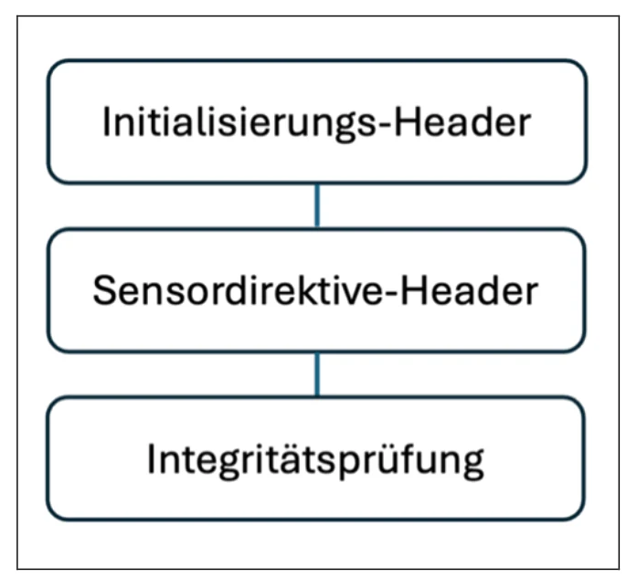
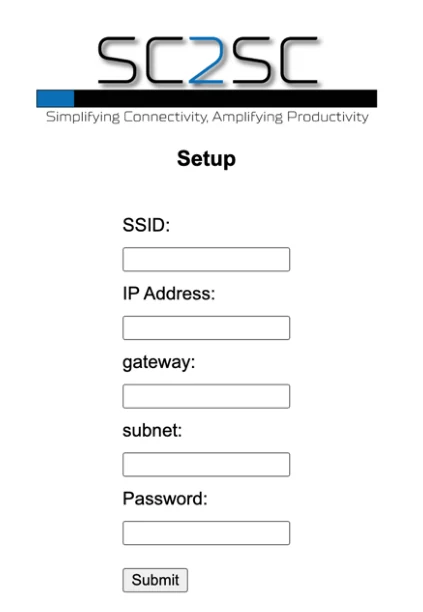

Herausforderung & Problemstellung
Sensorik ist in industriellen Anlagen allgegenwärtig, doch die am Markt verfügbaren Lösungen sind häufig teuer und als geschlossene, proprietäre Systeme ausgelegt. Wer eine bestehende Maschinensteuerung um eine selbst entwickelte Sensoreinheit erweitern möchte, steht deshalb vor einem erheblichen Entwicklungsaufwand: Es fehlt eine offene, dokumentierte Schnittstelle, über die sich eigene Messeinheiten an eine übergeordnete Auswerteeinheit anbinden lassen.
Cloud-basierte Ansätze lösen das Problem nicht, weil sie für zeitkritische Prozesse in der Automatisierungstechnik ungeeignet sind. Gesucht war daher eine direkte, performante und fehlertolerante Übertragung von kostengünstigen Sensoreinheiten auf Mikrocontrollerbasis an eine Siemens-S7-Steuerung, ohne den Umweg über eine übergeordnete Plattform. Daraus ergab sich die leitende Fragestellung des Projekts:
Wie ist die Datenschnittstelle auf Basis TCP/IP zu gestalten, um eine schnelle und benutzerfreundliche Erweiterung einer Siemens S7 Maschinensteuerung um zusätzliche, selbstentwickelte Sensoreinheiten zu ermöglichen?
Quelle: Kyr & Jilch (2024), Kapitel 2 und 3Lösungsansatz
Entwickelt wurde eine eigene Datenschnittstelle mit dem Arbeitstitel SC2SC, die eine TCP/IP-Verbindung zwischen einer Siemens S7 Steuerung und ESP32-Mikrocontrollern herstellt. Die Steuerung tritt dabei als Client auf, die Sensormodule als Server. Übertragen wird nicht ein beliebiger Datenstrom, sondern eine festgelegte Nachrichtenstruktur, über deren Kopfdaten sich Betriebsart, Sensorauswahl, Nachrichtenlänge und optionale Funktionen steuern lassen.
Methodisch folgte das Projekt dem evolutionären Prototyping: Zu Beginn stand die Definition der Kernfunktionen, in den späteren Iterationen deren schrittweise Erweiterung und Detailoptimierung. Die Schnittstelle wurde dabei fortlaufend gegen Anforderungen wie Durchsatzleistung, Datensicherheit, Sensordichte und Implementierungsfähigkeit geprüft.

Protokollentwurf
Das Protokoll gliedert sich in drei statische Segmente: den Initialisierungs-Header, den Sensordirektive-Header und die Integritätsprüfung. Über die Konfiguration der beiden Header werden die dynamischen Bestandteile der Nachricht gesteuert und optionale Funktionen aktiviert.

Initialisierungs-Header
Der Initialisierungs-Header umfasst ein Byte und trägt die Steuerinformationen der Nachricht. Neben Start- und Endekennung regelt er die Portwahl, schaltet optionale Header frei und legt über zwei Bit die Betriebsart fest.
| Bit | Funktion | Bedeutung |
|---|---|---|
| 0 | Message Start/Repeat | 0 = neue Nachricht, 1 = Folgenachricht |
| 1 | Message End | 0 = weitere Pakete folgen, 1 = Ende der Nachricht |
| 2 | Backup-Port | 0 = nur primärer Port, 1 = zusätzlich Backup-Port |
| 3 | QoS-Enable | schaltet den QoS-Header frei |
| 4 | Security-Enable | schaltet den Secure-Header frei |
| 5 | Reserved | reserviert für spätere Iterationen |
| 6–7 | Mode | 00 Default, 01 Setup, 10 Sensor-Info, 11 Error |
Sensordirektive-Header
Der Sensordirektive-Header umfasst zwei Byte und steuert die eigentliche Sensorabfrage. Sieben Bit für die Sensorauswahl ergeben 126 adressierbare Sensoren; die Kennung 0 ist für allgemeine Statusabfragen einer Sensorgruppe reserviert. Ein eigenes Bit entscheidet, ob Messwerte als umgerechnete Größe oder als Rohwert zurückkommen. Das letzte Bit erlaubt, mehrere Sensoren in einer einzigen Nachricht zu bündeln: Folgt ein weiterer Sensordirektive-Header, sinkt der prozentuale Anteil des Überbaus aus Initialisierungs-Header und Prüfsumme deutlich.
| Bit | Funktion | Bedeutung |
|---|---|---|
| 0–6 | Sensor Selection | Kennung des abgefragten Sensors, 126 mögliche Kennungen |
| 7 | Raw Data | 0 = umgerechneter Wert, 1 = Rohwert ohne Umrechnung |
| 8–14 | Message Length | Nachrichtenlänge von 0 bis 127 Byte |
| 15 | Additional Sensor Header | 1 = ein weiterer Sensordirektive-Header folgt |
Integritätsprüfung
Die Integrität der Nachricht sichert eine CRC8-Prüfsumme über den gesamten Nachrichtenpuffer. Die zugehörige Lookup-Tabelle wird einmalig erzeugt; das kostet anfangs Zeit und Speicher, beschleunigt danach aber jede Berechnung und jede Verifikation erheblich. Über die Prüfsumme lassen sich Bitfehler ebenso feststellen wie Manipulationen am Datenpaket.
Testaufbau
Validiert wurde die Schnittstelle an einem physischen Aufbau mit einer Siemens SIMATIC S7-1500 (CPU 1512SP F-1 PN), einem SCALANCE XB008 Switch und mehreren ESP32 NodeMCU als Sensormodule. Als Messgrößen dienten Temperatur und Luftfeuchte (HTU21) sowie Strom (ACS712), weil sich diese Werte leicht gegenprüfen lassen. Programmiert wurde die Steuerung im TIA-Portal V18 in SCL, die Sensormodule in C/C++ über die Arduino-IDE.
Für die Entwicklung der Schnittstelle selbst entstand zusätzlich eine webbasierte Testoberfläche in Python. Über sie lassen sich einzelne Bits des Protokolls gezielt setzen, die Nachricht manuell versenden und die Antwort des Systems unmittelbar ablesen. Das erlaubte, den Protokollentwurf zu prüfen, bevor die Steuerungsseite fertig war.


Implementierung auf dem Sensormodul
Auf der Seite der ESP32-Module sind die beiden Header als Bitfelder umgesetzt. Statt mit numerischen Werten wird dabei mit sprechenden Bezeichnern gearbeitet, sodass sich ein einzelnes Bit über seinen Namen setzen lässt und nicht über seine Position. Das macht die Bibliothek lesbar und in anderen Projekten wiederverwendbar. Für die Übertragung steht ein Nachrichtenpuffer von 512 Byte bereit. Ein Leistungstest ergab, dass sich im Mittel eine Million Header-Zuweisungen samt Gültigkeitsprüfung in 468 ms ausführen lassen, wovon 466 ms auf die Prüfung entfallen; eine weitere Optimierung dieser Bibliothek war daher nicht erforderlich.
Ablauf einer Abfrage
Das Ablaufprogramm gliedert sich in acht Schritte, vom Empfang bis zum Versand der Antwort:
- Informationen empfangen
- CRC-Prüfung der empfangenen Nachricht
- Analyse des SC2SC-Protokolls
- Sensorinformationen abrufen
- Aufbau des SC2SC-Protokolls für die Antwort
- CRC-Kalkulation über den Antwortpuffer
- Nachrichtenpuffer erstellen
- Informationen senden
Die Analyse und Zerlegung des Protokolls war dabei die technisch anspruchsvollste Aufgabe der Umsetzung. Aus dem Sensordirektive-Header wird die adressierte Sensorgruppe bestimmt, über alle zugehörigen Sensoren iteriert und für jeden ein eigener Header samt Messwert in den Puffer geschrieben; das Flag für einen weiteren Sensor-Header wird dabei automatisch gesetzt. Erst zum Schluss entsteht der Initialisierungs-Header an Position 1 und die Prüfsumme am Ende des Puffers. Ein reiner Erreichbarkeitstest kommt auf diese Weise mit vier Byte aus. Gruppenabfragen steigern die Leistungsfähigkeit spürbar, weil sie die Anzahl der Verbindungsaufbauten verringern. Für die Fehlerbehandlung werden Fehlercodes mit Zeitstempel protokolliert, und bei Verbindungsverlust baut das Modul die Verbindung zum Netzwerk selbsttätig neu auf.
Anbindung beliebiger Sensorik
Damit sich unterschiedliche Sensortypen ohne Eingriff in die Schnittstellenlogik anbinden lassen, kapselt eine eigene Datenstruktur den Messwert samt Typkennung, und eine virtuelle Klasse gibt die Funktionen vor, über die jeder Sensor angesprochen wird. Ein Temperatursensor, der Ganzzahlen liefert, und ein Vibrationssensor, der Gleitkommawerte zurückgibt, nutzen damit dieselben Aufrufe. Vorgesehen sind das Abrufen eines Messwerts, die Abfrage der Sensorinformationen, die Kalibrierung, das Setzen und Auslesen der Einheiten sowie die Konfiguration; optionale Parameter im JSON-Format erlauben dabei eine weitergehende Parametrisierung direkt aus der Nachricht heraus.
Inbetriebnahme ohne Programmierkenntnisse
Für die Einrichtung im Feld spannt das Modul beim Start einen eigenen Zugangspunkt auf. Ein Captive Portal leitet über einen eigenen DNS-Server jede Anfrage auf die Konfigurationsseite um, auf der sich Netzwerkname, Adresse, Gateway, Subnetz und Passwort eintragen lassen. Nach erfolgreicher Konfiguration wechselt das Modul in den Stationsmodus und verbindet sich mit dem Netz der Steuerungskomponenten, wo es anschließend selbst als Webserver läuft.

Ergebnis & Mehrwert
Entstanden ist ein lauffähiger Softwareprototyp auf dem Technologie-Reifegrad TRL 3, also der Implementierung und Testung der kritischen Funktionen. Am physischen Testaufbau werden Temperatur-, Luftfeuchte- und Strommesswerte erfolgreich von den Sensormodulen an die Steuerung übertragen und dort ausgewertet. Umgesetzt sind der Auf- und Abbau der Verbindung, die dynamische Zusammenstellung und Zerlegung des Protokolls, die Gruppenabfrage mehrerer Sensoren, die validierte CRC8-Prüfung sowie die Fehlerbehandlung mit Zeitstempel und selbsttätigem Neuaufbau der Verbindung.
Der Mehrwert liegt in der Offenheit des Entwurfs. Die Sensorstruktur standardisiert den Aufbau der Sensoreinheiten, sodass neue Messgrößen ohne Eingriff in die Schnittstellenlogik hinzukommen können, und die Weboberfläche macht die Inbetriebnahme ohne Programmierkenntnisse möglich. Damit lässt sich eine bestehende Maschinensteuerung um eigene Sensorik erweitern, ohne sich an ein proprietäres System zu binden.
Quelle: Kyr & Jilch (2024), Kapitel 17.8Ausblick
Das Protokoll ist bewusst weiter ausgelegt, als der Prototyp umsetzt. Die im Initialisierungs-Header bereits vorgesehenen Bits für Quality of Service und Sicherheit warten auf ihre Spezifikation; für die Absicherung stehen AES und TLS zur Diskussion. Systematische Leistungs- und Validierungstests sollen die Funktionsfähigkeit des Gesamtsystems belegen und die Grundlage für weitere Optimierungen schaffen.
Auf der Bedienseite soll die Weboberfläche über die Netzwerkeinrichtung hinauswachsen und auch die Konfiguration der Gruppenabfragen aufnehmen. Ein bekannter Engpass ist derzeit der Verbindungsaufbau des Mikrocontrollers zum Netzwerk: Die ursprünglich vorgesehene Bibliothek war nach einem Update des Arduino-Frameworks nicht mehr nutzbar, sodass auf eine weniger performante Alternative ausgewichen werden musste. Dieser Punkt ist der erste Ansatzpunkt für die nächste Iteration.
Quelle: Kyr & Jilch (2024), Kapitel 17.9 und 17.11Quellen
Kyr, P., & Jilch, A. (2024). SC2SC – Sensor Connection to Siemens Controller [Abschlussdokumentation, Masterklassenprojekt Industrie 4.0]. Fachhochschule St. Pölten, Department Medien und Digitale Technologien.
Die Abbildungen dieser Seite stammen aus der genannten Abschlussdokumentation und tragen deren Abbildungsnummern. Die Arbeit wurde im Zweierteam verfasst, beide Verfasser sind in der Quellenangabe genannt; die hier dargestellten Inhalte beziehen sich auf den Protokollentwurf, die Datenschnittstelle und die ESP32-seitige Software.
Zurück zu den Projekten